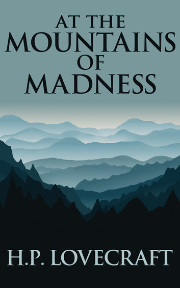

The story is recalled in a first-person perspective by the geologist William Dyer, a professor at Arkham's Miskatonic University, in the hope to prevent an important and much publicized scientific expedition to Antarctica. Throughout the course of his explanation, Dyer relates how he led a group of scholars from Miskatonic University on a previous expedition to Antarctica, during which they discovered ancient ruins and a dangerous secret, beyond a range of mountains higher than the Himalayas. A small advance group, led by Professor Lake, discovers the remains of fourteen prehistoric life-forms, previously unknown to science, and also unidentifiable as either plants or animals. Six of the specimens have been badly damaged, while another eight have been preserved in pristine condition. The specimens' stratum places them far too early on the geologic time scale for the features of the specimens to have evolved. Some fossils of Cambrian age show signs of the use of tools to carve a specimen for food. When the main expedition loses contact with Lake's party, Dyer and his colleagues investigate. Lake's camp is devastated, with the majority of men and dogs slaughtered, while a man named Gedney and one of the dogs are absent. Near the expedition's campsite, they find six star-shaped snow mounds with one specimen under each. They also discover that the better preserved life-forms have vanished, and that some form of dissection experiment has been done on both an unnamed man and a dog. The missing man is suspected of having gone utterly insane and having killed and mutilated all the others. Dyer and a graduate student, named Danforth, fly an aeroplane across the mountains, which they identify as the outer walls of a vast abandoned stone-city, alien to any human architecture. For their resemblance to creatures of myth mentioned in the Necronomicon, the builders of this lost civilization are dubbed the "Elder Things". By exploring these fantastic structures, the men learn through hieroglyphic murals that the Elder Things first came to Earth shortly after the Moon took form and built their cities with the help of "shoggoths" — biological entities created to perform any task, assume any form, and reflect any thought. There is a hint that all earthly life evolved from cellular material left over from the creation of the shoggoths. As more buildings are explored, the explorers learn about the Elder Things' conflict with both the Star-spawn of Cthulhu and the Mi-go, who arrived on Earth shortly afterwards. The images also reflect a degradation of their civilization, once the shoggoths gain independence. As more resources are applied in maintaining order, the etchings become haphazard and primitive. The murals also allude to an unnamed evil lurking within an even larger mountain range located beyond the city. This mountain range rose in one night and certain phenomena and incidents deterred the Elder Things from exploring it. When Antarctica became uninhabitable, even for the Elder Things, they soon migrated into a large, subterranean ocean. Dyer and Danforth eventually realize that the Elder Things missing from the advance party's camp had somehow returned to life and, after slaughtering the explorers, have returned to their city. Dyer and Danforth also discover traces of the Elder Things' earlier exploration, as well as sleds containing the corpses of both Gedney and his missing dog. They are ultimately drawn towards the entrance of a tunnel, into the subterranean region depicted in the murals. Here, they find evidence of various Elder Things killed in a brutal struggle and blind six-foot-tall penguins wandering placidly, apparently used as livestock. They are then confronted by a black, bubbling mass, which they identify as a shoggoth, and escape. Aboard the plane, high above the plateau, Danforth looks back and sees something which causes him to lose his own sanity, implied to be the unnamed evil itself. Dyer concludes the Elder Things slaughtered the survivors and dogs only out of self-defense or scientific curiosity, that their civilization was eventually destroyed by the shoggoths and that this further entity has preyed on the enormous penguins. He warns the planners of the next proposed Antarctic expedition to stay distant from the site.